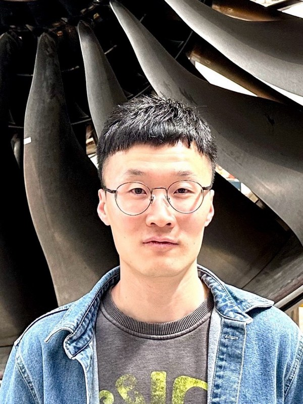

I am a Research Fellow at the Rolls-Royce University Technology Centre (UTC) in Manufacturing & On-Wing Technology, University of Nottingham, where I also completed my PhD in Manufacturing Engineering in 2024. My research develops small-scale soft and continuum robots for inspection and repair in extremely confined spaces — such as the sub-millimetre gaps inside aero-engines and the hazardous interiors of nuclear facilities.
My work spans flexible actuation with dielectric elastomer actuators, structural and topology optimisation, rigid–flexible coupling, flexible / tactile sensing, and learning-based control. My long-term goal is to build the next generation of automated, intelligent, millimetre-to-centimetre-scale robots that can navigate, perceive and make decisions inside high-value assets — making inspection and maintenance safer, cheaper and greener.
Repair and Evaluation of aerospace Products Line-side, Near-wing and In-Shop. Developing novel pneumatic systems for borescopes and continuum robots, and automated soft manipulators with flexible tactile sensing for aero-engine inspection and repair.
Developed a new ultra-thin robot able to enter ultra-narrow spaces of next-generation aircraft engines and perform multimodal motion and inspection — spanning smart materials, manufacturing, flexible circuits, modelling and simulation. Recognised at the Rolls-Royce R&T Conference (2024).
Surveying nuclear environments via narrow entry. Proposed the original design of the pneumatic stiffening section for the continuum robot and delivered the first-version demonstration.
Continuum robots for inspecting and repairing Airbus A350 wing fuel tanks. Responsible for design, assembly and testing of the continuum robots.
Adapted a 5 m continuum industrial robot (COBRA) for medical use. Led the design, manufacture and development of end-effectors (tweezers, hot-wire cutter), the drive & control systems, and project testing.
Pneumatic systems for borescopes and continuum robots performing assisted inspection and repair, with an automated soft manipulator integrating a flexible tactile sensor.
Reviewer for Nature Communications, Journal of Field Robotics, Journal of Mechanical Design, and IEEE-RAS RoboSoft, among others. Soft-robot lab student manager, Rolls-Royce UTC (2022 – present). Teaching Assistant, Mechanical Design, University of Nottingham (2024 – 2026).
* Corresponding author · # Equal contribution